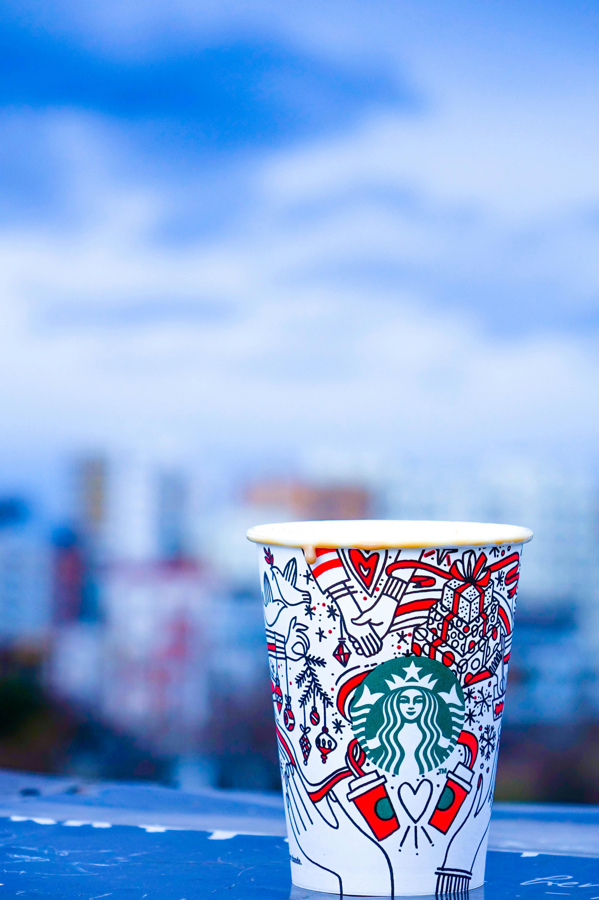

A propos de moi
Passionné par les technologies, je mets mon expertise au service de la création de solutions innovantes. Enthousiaste et motivé, je suis prêt à m’investir dans des projets variés au sein d’une équipe dynamique et relever de nouveaux défis dans le domaine de l’informatique.
Expériences
2025 - Actuel
Développeur Informatique - FbMenuiseries
Développement d'une plateforme web de gestion d'informations de la clientèle sur terrain.
Wordpress • VuejJS • MySQL • Firebase • Python
2020 - 2024
Responsable Digitalisation - Diehl Augé Découpage
Elaboration et mise en oeuvre d’une stratégie de digitalisation. Evaluer, sélectionner et intégrer de nouvelles technologies. Identifier les processus inefficaces et proposer des solutions numériques pour les automatiser et les améliorer
VueJS • Javascript • Flutter • Python
2020
Responsable Informatique - Watermill Lodge, Irlande du Nord
Gestion le parc informatique, les systèmes de vidéo-surveillance et le matériel électronique des bateaux de pêches du domaine Watermill fishing lodge Ireland.
HTML • CSS • Javascript • Python
Side Projects
2024

ADB Digital
Création d'un site web vitrine pour ADB Digital.
VueJS • Javascript
2024 - Actuel
Seeker
Conception d'une application mobile "Seeker" pour aider les détectoristes à indiquer leurs découvertes sur une carte avec les coordonnées GPS.
Flutter • Firebase • Dart
2021 - 2022

Ressouces Relationnelles
Réalisation d'une application mobile (réseau social) qui permet la création/connexion de compte, publication de posts, decommenter, d'aimer ainsi que de discuter en temps réel en Flutter avec Firebase.
Flutter • Firebase • Dart
Links
Github
@Adrizen89Site
adbdigital.fr